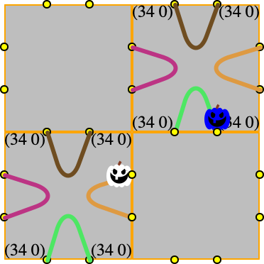

Software Development
From the first day of the semester forward we expect students (you) to visit this page once per 24 hours.
 Friday, August 21st, 2020 9:04:31am
Friday, August 21st, 2020 9:04:31am
this applies to software developers as well (and I think he knows)
if you look carefully it is the design recipe applied in real life—
just like the Epilogue says.

Wednesday, August 5th, 2020 9:46:03am
Welcome to the Fall 2020 issue of Software Development. As always, we aim to deliver a course that teaches you a lot, not in terms of industrial tools and techniques but for your life as a reflective software developer.
this front page serves as a universal announcement scroll,
the Assignments, Actual page serves as your “task list,” and
a few other pages come online as needed.
The College’s web services company caches pages on a too-permanent basis, injecting the occasional miscommunication. The backup site for the course can be found at the personal web page of the lead instructor.
